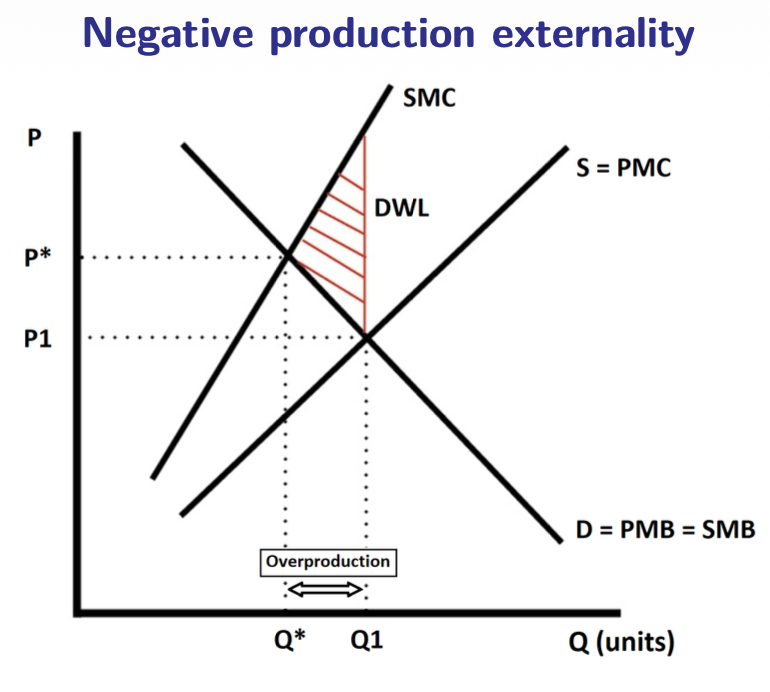
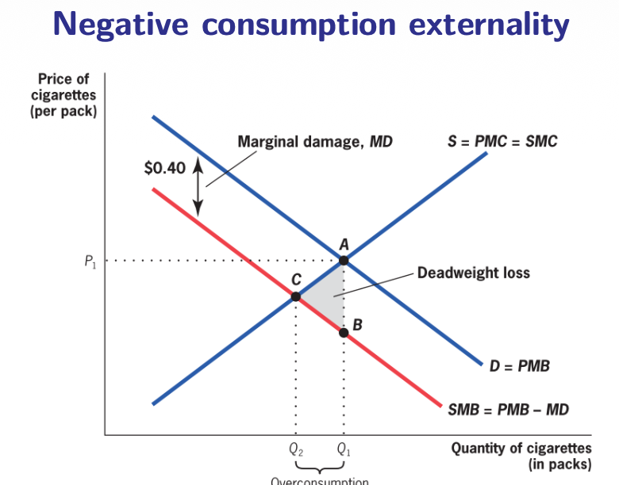
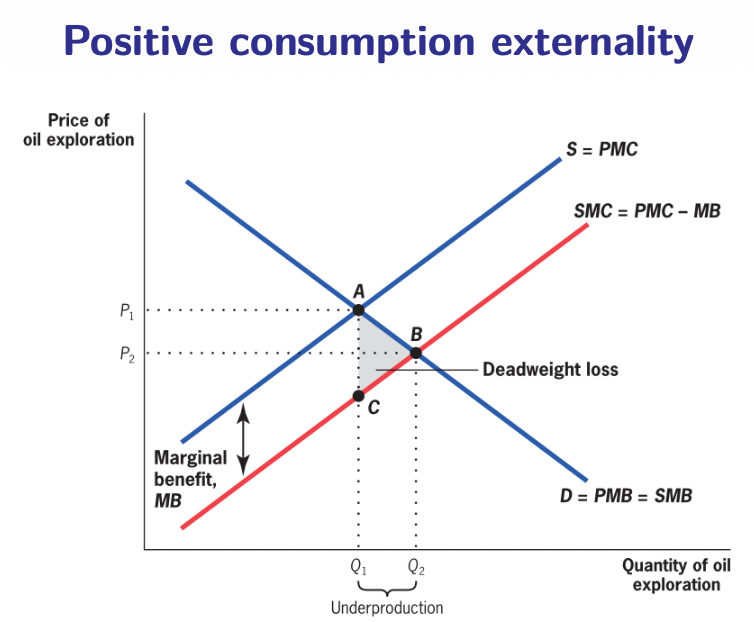
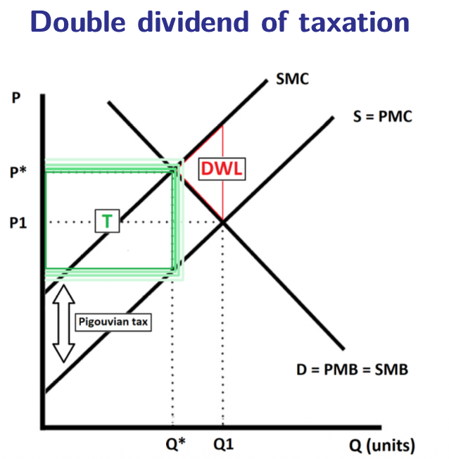

4.2 — Externalities
Chapter 4: Public Goods & Externalities
What are Externalities?
An externality is a cost or benefit that happens when someone's action has an uncompensated effect on someone else. In other words, the person doing the action doesn't pay for the harm (negative) or get paid for the benefit (positive).
Detailed examples:
- Negative: A steel plant that pollutes a river used by people for recreation. The plant saves money but society pays for the dirty water.
- Positive: Beehives of honey producers. They help nearby farmers pollinate their crops for free, increasing agricultural output.
Classification
Externalities are usually categorized by their impact and their source:
Positive vs. Negative
Does it create a benefit or a cost for others?
Production vs. Consumption
Does the effect come from making a product or using it?
Other classifications to know:
- Real vs. Pecuniary: Real affects production/utility (pollution); Pecuniary only affects prices (e.g., more people moving into a city raises rents). Economists focus on Real externalities.
- Local vs. Global: Noise from a construction site (local) vs. Climate change (global).
- Common Resource Problem: Overusing a shared resource (like overfishing).
- Positional Externality: Spending money to look better than a neighbor, making them look relatively worse.
- Network Externalities: A service (like WhatsApp) becomes more useful as more people use it.
Externalities Formally
Economists Buchanan and Stubblebine (1962) used utility functions to explain this. If person A's utility ($uA$) depends on person B's action ($Y1$):
An externality exists if the effect of B's action on A's utility is not zero:
• Positive: If $\partial uA / \partial Y_1 > 0$ (benefit).
• Negative: If $\partial uA / \partial Y_1 < 0$ (cost).
Private vs. Social Value
To analyze externalities, we must distinguish between what the individual pays/gets and what the society pays/gets.
| Term | Meaning |
|---|---|
| PMC | Private Marginal Cost: Direct cost to the producer. |
| SMC | Social Marginal Cost: PMC + External Cost. |
| PMB | Private Marginal Benefit: Direct benefit to the consumer. |
| SMB | Social Marginal Benefit: PMB + External Benefit. |
The Formal Relationships:
- 1. No Externalities: $PMC = SMC$ and $PMB = SMB$.
- 2. Negative Externality: $PMC < SMC$ (producer cost is artificially low).
- 3. Positive Externality: $PMB < SMB$ (private benefit is artificially low).
Summary of Inefficiency:
• Negative Production $\rightarrow$ Overproduction
• Positive Production $\rightarrow$ Underproduction
• Negative Consumption $\rightarrow$ Overconsumption
• Positive Consumption $\rightarrow$ Underconsumption
Graphical Analysis
1. Negative Production Externality (e.g., Pollution)

Technical Breakdown:
- Demand: $D = PMB = SMB$ (Private benefit equals social benefit).
- Private Supply: $S = PMC$ (Only direct manufacturing costs).
- Social Cost: $SMC = PMC + MD$ (Located above private supply due to damage).
➡️ Result: Market equilibrium is at $Q_1$ (where $PMC = PMB$), but the social optimum is at $Q^*$ (where $SMC = SMB$). This leads to overproduction and a Deadweight Loss (DWL) triangle between $SMC$ and $PMB$.
2. Negative Consumption Externality (e.g., Cigarettes)

Technical Breakdown:
- Private Demand: $D = PMB$ (Individual utility from smoking).
- Social Demand: $SMB = PMB - MD$ (Located lower because of external harm).
- Supply: $S = PMC = SMC$ (Assumed no production externality).
➡️ Result: Consumers ignore the Marginal Damage ($MD$), leading to an equilibrium at $Q_1$ instead of $Q_2$. This causes overconsumption and a DWL triangle between $SMB$ and $PMC$.
3. Positive Consumption Externality (e.g., Education / Vaccination)

Technical Breakdown:
- Private Demand: $D = PMB$ (Individual benefit).
- Social Demand: $SMB = PMB + MB$ (Located higher due to external benefits).
- Supply: $S = PMC = SMC$.
➡️ Result: Individual choice leads to $Q_1$, but the optimum is at $Q_2$. Because individuals ignore the benefits to others ($MB$), there is underconsumption and a DWL triangle between $SMB$ and $PMC$.
Case Study: COVID-19
COVID-19 showed why externalities are vital. Preventing spread is full of positive consumption externalities.
The Actions
Facemasks, hand washing, quarantine, and vaccination.
The Problem
Social benefit > Private benefit. People might not want to wear a mask (personal cost), even if it saves dozens of lives (huge social benefit).
Because of this gap, there is underconsumption. Governments use:
- Restrictions: Laws mandating masks or lockdowns.
- Subsidies: Providing free vaccines to everyone.
Internalizing Externalities
Actually, there is a non-zero optimal level. Driving cars causes pollution, but the benefit of transport is so high that we don't want to stop all driving. We weigh the benefits against the social costs to find the "socially optimal" amount.
Internalizing means making the person doing the action feel the social impact (e.g., through a tax or a rule).
The Double Dividend of Taxation
Usually, taxes cause "deadweight loss" (inefficiency). But taxing negative externalities is special.

How the Pigouvian Tax Works:
- Demande : $D = PMB = SMB$
- Offre privée : $S = PMC$
- Coût social : $SMC$ (situé au-dessus de $PMC$)
Correction par la Taxe : La Taxe Pigouvienne ($T$) est fixée exactement à l'écart entre le coût social ($SMC$) et le coût privé ($PMC$). Elle déplace l'offre vers le haut (de $PMC$ à $SMC$), ramenant la production de $Q_1$ à l'optimum social $Q^*$.
Ce mécanisme offre deux bénéfices simultanés :
- 1. Efficiency Gain: La taxe corrige l'externalité et élimine l'inefficacité (la perte sèche ou triangle rouge sur le graphique).
- 2. Revenue Gain: Elle génère des recettes fiscales qui peuvent être réinvesties dans des biens publics comme l'éducation.
Externalities Summary:
- Negative effects lead to overproduction/overconsumption.
- Positive effects lead to underproduction/underconsumption.
- Internalizing means making agents pay for their external costs.
- Double Dividend: Fixing the market + Tax revenue for education.